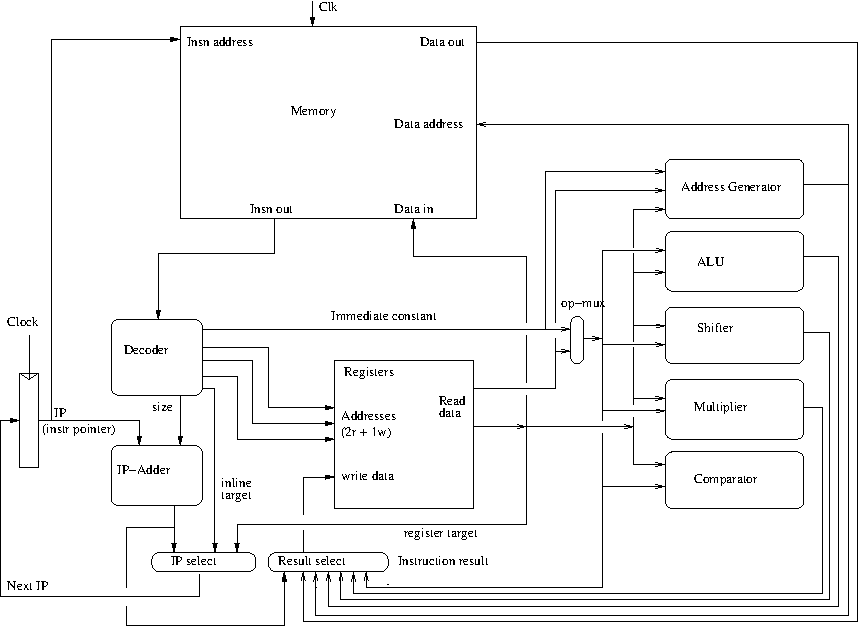

class: center, middle # Velkommen til maskinarkitektur-delen af CompSys Finn Schiermer Andersen, Ekstern lektor, DIKU --- # Abstraktionsniveuaer 1. Højniveau programmeringssprog: Erlang, OCaml, F# osv 2. Maskinnære programmeringssprog: C (og C++) 3. Assembler / Symbolsk Maskinsprog: x86, ARM, MIPS 4. Arkitektur (ISA): Maskinsprog - ordrer indkodet som tal 5. Mikroarkitektur: ting som lager, registre, regneenheder, afkodere og hvordan de forbindes så det bliver en maskine 6. Standard celler: Simple funktioner af få bit (1-4) med et eller to resultater. Lagring af data (flip-flops) 7. Transistorer 8. Fysik. Eller noget der ligner --- class: center, middle # Den Simpleste Maskine Næsten x86 bliver aldrig helt simpel. Men vi vil forsøge. Vi kalder den # x86prime --- # x86prime - instruktioner 1. Aritmetik - kun register/register og konstant/register * 2-komplement aritmetik: addq, subq, mulq, imulq, sarq, shrq, salq * Bitvis logik: andq, orq, xorq * Addresse-aritmetik: leaq, all formater 2. Kontrol * sammenligning og betinget hop i EN instruktion: CBcc (jmp,cbe,cbne,cble,cbl,cbge,cbg) * funktionskald der bruger registre, ikke stakken: call, ret * stop verden! jeg vil af: retur til adresse <= 0. 3. Data flytning (egentlig er det kopiering, men...) * konstant til register: movq $imm, %reg * register til register: movq %reg, %reg * register til lager (store): movq %reg, displacement(%reg) * lager til register (load): movq displacement(%reg), %reg --- # Med en regulær indkodning ~~~ 00000000 0000ssss ret s 0001aaaa ddddssss register/register arithmic: op s,d 00100001 ddddssss movq s,d 00110001 ddddssss movq (s),d 00111001 ddddssss movq d,(s) 0100cccc ddddssss pp...32...pp cb<c> s,d,p 01001110 dddd0000 pp...32...pp call p,d 01001111 00000000 pp...32...pp jmp p 0101aaaa dddd0000 ii...32...ii imm/register arithmetic: op i,d 01100100 dddd0000 ii...32...ii movq $i,d 01110101 ddddssss ii...32...ii movq i(s),d 01111101 ddddssss ii...32...ii movq d,i(s) 10xxxxxx leaq (various forms) 1111cccc dddd0000 ii...32...ii pp...32...pp cb<c> $i,d,p dddd og ssss er registre. aaaa angiver aritmetisk operation ii...32...ii er et 32-bit 2-komplement tal pp...32...pp er en 32-bit adresse ~~~ --- # Indkodning af leaq ~~~ 10000001 ddddssss leaq (s),d 10010010 dddd0000 zzzzvvvv leaq (,z,(1<<v)),d 10010011 ddddssss zzzzvvvv leaq (s,z,(1<<v)),d 10100100 dddd0000 ii...32...ii leaq i,d 10100101 ddddssss ii...32...ii leaq i(s),d 10110110 dddd0000 zzzzvvvv ii...32...ii leaq i(,z,(1<<v)),d 10110111 ddddssss zzzzvvvv ii...32...ii leaq i(s,z,(1<<v)),d ~~~ zzzz angiver et register. vvvv angiver hvor meget der skal skiftes. Bemærk sammenhængen mellem hvilke operander der indgår i beregningen og de 3 mindst betydende bits i den første byte :-) Bemærk også at enhver instruktions længde kan bestemmes alene fra de første 4 bits. --- # Indkodning af betingelse ~~~ 0100cccc ddddssss pp...32...pp cb<c> s,d,p 1111cccc dddd0000 ii...32...ii pp...32...pp cb<c> $i,d,p cccc: betingelse 0000 e 1000 a 0001 ne 1001 ae 0010 <reserved> 1010 b 0011 <reserved> 1011 be 0100 l 1100 <reserved> 0101 le 1101 <reserved> 0110 g 1110 <reserved> 0111 ge 1111 <reserved> ~~~ Et eksempel: sammenlign %r10 med %r11 og hop til 0x407, hvis %r10 er mindre end eller lig med %r11 ~~~ 01000101 10111010 00000111 00000100 00000000 00000000 cble %r10,%r11,0x407 ~~~ --- # inkodning af aritmetisk operation ~~~ 0001aaaa ddddssss register/register arithmic: op s,d 0101aaaa dddd0000 ii...32...ii imm/register arithmetic: op i,d aaaa: aritmetisk operation 0000 add 0001 sub 0010 and 0011 or 0100 xor 0101 mul 0110 sar 0111 sal 1000 shr 1001 imul ~~~ Et par eksempler: ~~~ 00010001 10011010 subq %r10,%r9 01010001 10010000 11111111 00000000 00000000 0000000 subq $255,%r9 ~~~ --- # Eksempel - fakultetsfunktionen i x86 ~~~ long fak(long n) { long res; if (n > 1) return n * fak(n - 1); else return 1; } fak: cmpq $1, %rdi fak(n) { jle .L3 if (n <= 1) goto L3 pushq %rbx movq %rdi, %rbx leaq -1(%rdi), %rdi t = fak(n-1) call fak imulq %rbx, %rax res = n * t; jmp .L2 goto L2 .L3: movl $1, %eax return 1; ret .L2: popq %rbx return res; ret ~~~ --- # Fra x86 til x86prime: ~~~ fak: # fak: # addq -8, %rsp fak(n) { # movq %r11, (%rsp) cmpq $1, %rdi # jle .L3 # cbge $1,%rdi,.L3 if 1 >= n goto L3 pushq %rbx # addq -8, %rsp # movq %rbx, (%rsp) movq %rdi,%rbx # movq %rdi, %rbx leaq -1(%rdi),%rdi # leaq -1(%rdi), %rdi t = fak(n-1); call fak # call fak,%r11 imulq %rbx, %rax # imulq %rbx, %rax res = n * t; jmp .L2 # jmp .L2 goto L2 .L3: # .L3: movl $1, %eax # movq $1, %rax return 1; ret # movq (%rsp), %r11 # addq 8, %rsp # ret %r11 .L2: # .L2: popq %rbx # movq (%rsp), %rbx return res; ret # movq 8(%rsp), %r11 # addq 16, %rsp # ret %r11 } ~~~ --- # Eksempel: fak() i x86prime ~~~ 00000000 : # fak: 00000000 : 5070f8ffffff # addq -8, %rsp fak(n) { 00000006 : 39F7 # movq %r11, (%rsp) 00000008 : F7600100000030000000 # cbge $1,%rdi,.L3 if 1 >= n goto L3 00000012 : 5070f8ffffff # addq -8, %rsp 00000018 : 3917 # movq %rbx, (%rsp) 0000001a : 2116 # movq %rdi, %rbx 0000001c : A566ffffffff # leaq -1(%rdi), %rdi t = fak(n-1); 00000022 : 4EF000000000 # call fak,%r11 00000028 : 1501 # imulq %rbx, %rax res = n * t; 0000002a : 4F0040000000 # jmp .L2 goto L2 00000030 : # .L3: 00000030 : 640001000000 # movq $1, %eax return 1; 00000036 : 31F7 # movq (%rsp), %r11 00000038 : 507008000000 # addq 8, %rsp 0000003e : 000F # ret %r11 00000040 : # .L2: 00000040 : 3117 # movq (%rsp), %rbx return res; 00000042 : 75F708000000 # movq 8(%rsp), %r11 00000048 : 507010000000 # addq 16, %rsp 0000004e : 000F # ret %r11 } ~~~ --- # Nyttige programmer i en svær tid https://github.com/finnschiermer/x86prime * "Prasm": Kan assemble et x86prime program til hexadecimal notation * "Prun": Kan simulere udførelse af et x86prime program * "Primify": Kan oversætte (med begrænsninger) x86 assembler fra gcc til x86prime assembler. x86prime er skrevet i OCaml, som er et sprog ret tæt på F#. Der er intet krav om at I skal forstå programmet, I skal bare kunne bruge det. I bør bruge (en virtuel maskine) med Linux (f.eks Ubuntu eller Mint) for let at kunne installere x86prime. Alternativt udleverer vi nogle scripts som bruger en service på en af DIKUs maskiner. De virker kun når man er online (og servicen også er), men kræver til gengæld ingen besværlig installation. --- class: center, middle # Lad os se et større eksempel --- # Hardware - helt essentielt Der er grundlæggende to slags byggeklodser: * Funktionelle byggeklodser. De beregner hele tiden et resultat som funktion af input. Eksempler: * Adder (lægger tal sammen) * Shifter (skifter tal mod højre eller venstre) * Aritmetisk-logisk enhed (kan også lave bitvis and/or, evt skifte) * Multiplexor (vælger et af flere muligheder) * Afkoder (sætter styresignaler ud fra input) * Kombinationer af and, or, not * Tilstandselementer. Denne slags byggeklodser kan "huske" data. De opdateres på fastlagte tidspunkter, synkroniseret af en puls, på nudansk kaldet en "clock." Eksempler: * Register * Register-blok (eller register-fil) * Lager-blok (lidt som register-blok, men større og langsommere) De kan *alle* bygges af nand eller nor elementer. Mere herom næste forelæsning. --- # Hardware - helt essentielt (2) * Byggeklodser kan også være sammensatte. I så fald har de en eller flere "indre" forbindelser eller funktionalitet af hver type. Et typisk eksempel er en lagerblok. Den består af tilstandselementer, men har også en eller flere "læse-porte" som tager en adresse som input og giver indholdet af lagercellen på adressen som output. Byggeklodserne kan forbindes, så output fra en byggeklods flyder til input på en anden byggeklods. Hvis du forbinder funktionelle byggeklodser (altså dem der ikke kan lagre resultater), så de er cirkulært afhængige, så bliver resultatet udefineret. * Hvorfor det? Der er *altid* cirkulære afhængigheder i en mikroarkitektur, men *alle* cirkulære afhængigheder skal splittes ved brug af tilstandselementer. --- # Eksempel på en mikroarkitektur <center>  </center> --- # Forklaringer/Noter til mikroarkitektur * Alle byggeklodser med et "Clk" signal er/indeholder tilstandselementer. * F.eks. er "IP" et register der indeholder programtælleren/instruktions-pegeren * Byggeklodserne "Memory" og "Registers" er primært tilstandselementer, men de kan *læses* på ren funktionel vis. * Tilstandselementer er vist som kasser med skarpe hjørner --- # Funktionelle byggeklodser i mikroarkitekturen Byggeklodser uden "Clk" signal og med afrundede hjørner er uden indre tilstand. De beregner kontinuerligt deres output som funktion af input * "ALU" foretager aritmetiske beregninger. * "Address Generate" foretager adresseberegninger. Enten til brug ved tilgang til lageret, eller til instruktionen LEAQ. * "Shifter" foretager logisk og aritmetisk skift * "Multiplier" multiplicerer to tal med hinanden * "Comparator" sammenligner to tal og afgør om en betingelse er opfyldt. * "IP-Adder" beregner starten på næste instruktion * "IP-Select" udvælger adressen på næste instruktion * "Result-Select" udvælger resultatet af en instruktion (dvs. den værdi der skal skrived til destinationsregisteret). * "Decoder" genererer styre-signaler til alle de andre byggeklodser ud fra en instruktion. Bemærk at styre/kontrol-signaler ikke er vist i diagrammet. --- # Eksempel: flow for RET-instruktionen 1. Som resultat af en puls på "Clk" bliver IP opdateret. Den nye værdi drives fra IP til Memory og IP-Adder 2. Memory responderer ved at drive instruktionen på den udpegede adresse til Decoder. 3. Decoder genererer styresignaler til resten af datavejen. I det her tilfælde er den hentede instruktion en RET, så noget af det, Decoder skal gøre er at sikre at registre og lager ikke opdateres. 4. Decoder finder nummeret på registeret med returaddressen og sender det til "Registers" blokken. Den responderer ved at levere indholdet af registeret. 4. Decoder skal sende et styresignal til IP-Select således at indholdet af det udlæste register fra "registers" bliver udvalgt af "IP-Select" som ny instruktioners-peger 5. Først når en ny puls ankommer på "Clk" vil IP registeret blive opdateret og udførelse af den næste instruktion kan starte. Ind til da vil kredsløbet falde til ro. --- # Eksempel: flow for ADDQ %ra,%rb 1. Vi starter som for RET, men Decode opfører sig anderledes for ADDQ. For det første skal skrivning til registrene slås til. For det andet skal numre på register a og b fiskes ud af instruktionen og sendes til "Register". Det er også nødvendigt at styre ALU'en så den udfører en addition. Decoder skal også bestemme størrelsen af instruktionen, i det her tilfælde 2 bytes. Det skal sendes til IP-Adder. 2. Register udlæser de to operander fra de angivne registre og føder dem til ALUen. 3. ALUen udfører addition 4. Resultatet fra ALUen føres tilbage til register-filen 5. IP-Select skal instrueres i at vælge resultatet fra IP-Adder som ny instruktions-peger 5. Kredsløbet falder til ro 6. En ny puls på Clk når både til PC (og fører til opdatering til næste instruktion) og Register og fører til opdatering af destinations registeret. --- # Opsamling * Alle de funktionelle byggeklodser er altid aktive. Ændret input fører til beregning af nyt output. * Byggeklodser der ikke indgår i udførelsen af en given instruktion er alligevel aktive. Man skal blot sikre at det ikke fører til opdatering af tilstandselementer med forkerte resultater. * Hver clock-cyklus starter med en puls som opdaterer registre og lager. * Derefter "løber" beregningen gennem de funktionelle byggeklodser, indtil alle signaler er stabile. Så er kredsløbet faldet til ro. * Derpå kan en ny clock-cyklus starte. Hvad mon bestemmer clock-frekvensen for sådan en maskine? --- # A2 - Simulering af x86prime * Vi giver jer en simulator der ikke er helt færdig * En simulator er et program som lader som om det er en maskine. Det vil sige: det kan udføre andre programmer skrevet til den maskine der simuleres. * Senere giver I os en simulator der *er* færdig. Den kan udføre x86prime programmer * Der er krav til _hvordan_ i skriver jeres simulator. De krav afspejler hvordan hardware essentielt virker. --- # Modellering i C Vi har oversat egenskaberne ved byggeklodserne og hvordan de kombineres til *formkrav* til programmer skrevet i C. Det ligner ikke normalt C. Vi bruger kun to typer i vores program: en til kontrol-signaler, en til data: * Vi repræsenterer et kontrol signal med en "bool" * Vi representerer øvrigt data med en "val" En maskin cyklus udtrykkes ved et løkke gennemløb. Tilstandselementer erklæres udenfor løkken. Alle de funktionelle byggeklodser udfører deres arbejde først i hvert gennemløb. Alle tilstandselementer opdateres i slutningen af hvert gennemløb. ~~~ ip_reg_p ip_reg = ip_reg_create(); while (..) { // funktionelle byggeklodser: val ip_out = ip_read(ip_reg); val ip_next = add(ip_out, from_int(1)); // clock-puls... opdatering af tilstandselementer: ip_write(ip_reg, ip_next, true); } ~~~ --- class: center, middle # Lad os kigge lidt på den udleverede simulator --- # Udleveret kode - Forbindelser ~~~ // simple conversion val from_int(uint64_t); // pick a set of bits from a value val pick_bits(int lsb, int sz, val); // pick a single bit from a value bool pick_one(int position, val); // sign extend by copying a sign bit to all higher positions val sign_extend(int sign_position, val value); ~~~ Og flere, men ovenstående er de mest betydende --- # Udleveret kode - Logiske operationer For kontrol signaler, repræsenteret ved bool's bruger man bare de indbyggede logiske operatorer. For data, repræsenteret ved typen val findes der følgende funktioner ~~~ // mask out a value if control is false val use_if(bool control, val value); // bitwise and, or, xor and negate for bitvectors val and(val a, val b); val or(val a, val b); val xor(val a, val b); val neg(int num_bits, val); // reduce a bit vector to a bool by and'ing or or'ing all elements bool reduce_and(int num_bits, val); bool reduce_or(val); // 64 bit addition val add(val a, val b); ~~~ Vi udleverer også alle beregnings-enheder (alu, shifter, multiplier, etc). --- # Fejlfinding x86prime (også kaldet reference-simulatoren) kan producere en sporings-fil - en fil med de sideeffekter et program har mens det udføres. Den udleverede simulator til a2 (den I skal færddiggøre) kan læse sådan en sporings-fil og sammenholde den med hvad der sker under simulationen. Hvis der detekteres en afvigelse fra "sporet", kaldes en funktion der hedder error() med en fejlmeddelelse. Meddelelsen skrives ud og programmet terminerer. Men man kan køre simulatoren i gdb og sætte et breakpoint på error(). Derefter er det ligetil at inspicere variable i programmet --- class: center, middle # Spørgsmål og Svar --- # Vi lader billedet stå et øjeblik: <center> </center> ---